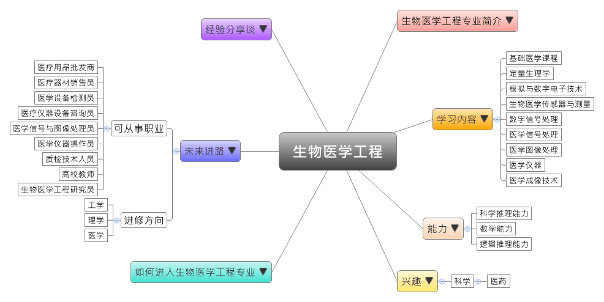
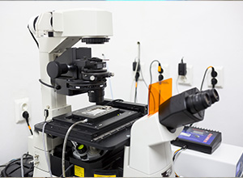
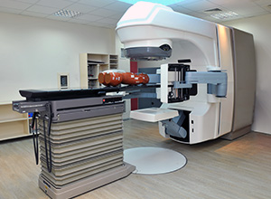

- 专业大观园
-

- 专业介绍
-
什么是生物医学工程？
生物医学工程是通过生物学的专业知识和工程学的方法，研究人的生命现象与规律。在职场上，随着医学科技的发展与许多大型医疗设备的应用逐年广泛，生物医学工程专业成为各大公司或医院急需的专业人才，毕业生可从事医疗设备研发、检测或维修等工作；在生活中，生物医学工程随着科技发达而有许多新颖的医疗设备与疗法，例如行动医疗 app 的应用或虚拟医疗仪器的应用，把许多不可能的医疗变成可能。
生物医学工程专业除了训练学生学习工程技术手段，来研究和解决生物学与医学的问题，也通过生物医学信号处理方法、医学成像和图像处理方法、超声波成像技术、核磁共振等专业技术的训练，让学生成为生物医学工程专业的研发人才。
 识生物医学工程仪器  参观放射线治疗实验室
- 学习内容
-
生物医学工程专业学生主要学习生命科学、信息科学、计算机技术，以及电子技术的理论与应用知识，生物医学工程相当注重在生物学与医学领域的实际应用，所以学生须接受生理医学、电子学和工程等相关仪器的操作与研发。
本专业学习方向通常分为两类：医学仪器操作类、医学信号理论、生物技术类。生物医学工程专业主干课程有：基础医学课程、定量生理学、模拟与数字电子技术、生物医学传感器与测量、微型计算机原理及其在医学中的应用、数字信号处理、医学信号处理、医学图像处理、医学仪器、医学成像技术……等。
此外，学生须加选一门以上的实践教学课程，如：医学类的实验课程、计算机与信号处理课程、生物医学测量与仪器实验、医学信号处理实验进行选修。
本专业可以习得的知识与获得之能力、技能列点：第一，具有生物医学的基础知识、研究与开发的初步能力；第二，具备进行生物信号检测、处理与分析的能力，以及熟悉超声波成像技术、CT、核磁共振的等实务技术；第三，了解国内生物医学的政策，以及全球生物医学工程的最新发展动态。
- 能力
-
生物医学工程专业学生，需具备以下能力：
相关性向能力 说明 科学推理能力  具有信号检测的能力
具有信号检测的能力
能掌握超声波成像的技术
具备生物医学传感器与测量的能力数学能力 有数学推导的能力
具备分析与解读生物信号的能力逻辑推理能力 具备批判与独立思考的能力
能分析与检测生物学信息之间的关联
能够研发有效的生物医学设备并进行验证
- 兴趣
-
若你对下列活动或事物有高度兴趣，可考虑进入生物医学工程专业学习：
科学 医药 致力于改善医疗环境
喜欢研究、修理各种机器
对生物、医疗、生命科学相关的信息感兴趣
- 如何进入此专业
-
下面列举开设生物医学工程专业的211工程重点大学院校：
- 未来进路
-
可从事职业
随着经济的发展，国人重视健康的程度逐年增加，加上许多医学科技设备的问世，让大家对于生物医学工程专业越来越重视。学生毕业后可进入各级医院的医学信息中心、医学影像科、国家医疗器械司或各级医疗器械检测所从事检测或相关设备研发的工作；亦可在各大跨国或国内医疗器械企业，比如GE、SIEMENS、PHILIPS、MEDTRONIC、MAQUET、迈瑞、安科、鱼跃等从事制造和销售工作；最后则是在各高等院校或科研部门从事相关学术与教学的工作。在工作职场上皆能发挥生物信号检测与分析、生物医学仪器操作等专长：
行业 职业 健康相关产品批发、健康相关产品零售、健康设备和用品租赁服务 医疗用品批发商、医疗器材销售员 健康科学研究和技术服务 医学设备检测员、医疗仪器质检员 健康咨询服务 医疗仪器设备咨询员 教育 高校教师 科学研究和技术服务业 生物医学工程研究员、医学信号与图像处理员、医学仪器操作员、质检技术人员 进修方向以下列举生物医学工程专业毕业生可以继续修读之学科门类、一级学科与硕士点：
学科门类 一级学科 硕士点 工学 生物医学工程医学信息系统与检测传感技术、中医工程、制药工程、诊疗仪器、计算机医学图像及信号处理、生物材料、生物医学仪器及设备、生物信息学、生物材料与组织工程 化学工程与技术生物化工 工程（专业硕士）生物医学工程、电子与通信工程、制药工程 理学 生物医学工程仿生材料与药物制剂、病原生物学、生物信息采集与处理 基础医学影像工程与信息技术 医学 生物医学工程再生医学
- 经验分享谈
-
科学刺儿头——徐涛
徐涛很早即表现出其“科学刺儿头”的特质，他也拥有众人所谓“亮瞎眼”的履历，30岁获国家杰出青年基金，33岁入选中科院“百人计划”，34岁担任“生物膜和膜蛋白的结构与功能研究”之首席科学家，44岁担任中科大本科生科学家班主任。
他人生里饶富趣味的一段，便是质疑诺贝尔奖得主内尔博士。1994年，仅24岁的徐涛作为华中理工大学生物医学工程专业的博士生，给来访的内尔博士做了一个实验，这个实验使用当时最先进的，由内尔博士发明的膜片钳设备，然而徐涛却指出设备系统中的bug“软件背景干扰未去除，将影响资料准确性”，而他也以专长修改了原本的程序设计，这让内尔博士印象深刻，日后邀请他到德国培养一年。
徐涛在同行眼里是出了名的勤奋。在德国研究所其间，他习惯当天资料当天即分析，因此徐涛也鼓励学生积累扎实的数理功底，掌握计算机工具，并多进实验室，因为科学的最佳助手是自己的头脑。着因于自己学生时期，在大四就一边上研究生课程，以及研二便修习免疫学等课程的经历，徐涛也常鼓励学生“多学点，哪怕以后兴趣转换了，打下了好基础，也会给你更多选择的自由。”
最后，徐涛说“我们要培养的是有情怀的科学家，而不是精致的利己主义者。教育如果无法使学生感受到幸福，就没有存在的必要。” 【资料来源：中国青年报. 科学家当上了国科大本科生班主任—新闻—科学网[EB/OL].】